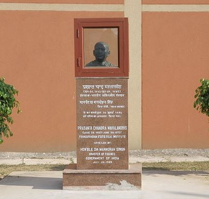

Welcome to the BSDS Programme at ISI Delhi
A four-year undergraduate programme in statistical data science, offered at the Delhi Centre of the Indian Statistical Institute.
Explore the ProgrammeAbout ISI Delhi
The Indian Statistical Institute was founded by Professor P.C. Mahalanobis in Kolkata on 17th December, 1931. The institute gained the status of an Institution of National Importance by an act of the Indian Parliament in 1959.
The Delhi Centre of the Indian Statistical Institute was started in 1974, and shifted to its present campus in 1975. Some of India's leading statisticians, mathematicians, and economists have been on its faculty, and its training programs enjoy worldwide repute.

The BSDS Programme
The four-year Bachelor (Hons.) programme in Statistical Data Science focuses on statistical methodology, with emphasis on statistical machine learning, computational and classical statistics and data analytics. It stresses applications of statistics in industry and the sciences, on a base of rigorous training in statistics, probability and mathematics.
Admission requires completion of 10+2 or equivalent. For 2026, admission was based on JEE Main and CUET (UG) percentiles. Admission portal
- Duration: four years, Bachelor (Hons.)
- Exit option: BSDS degree after three years
- Fifth year: optional, leads to an Integrated Master of Statistical Data Science
- Seats per centre: 25 (as stated on the programme page)
- Official programme page
News and Events
-
Opportunity Seminar by Mr. Utsyo Chakraborty, Senior Data Scientist @ ProcDNA
Mr. Utsyo Chakraborty, Senior Data Scientist at ProcDNA and an alumnus of ISI Delhi, delivered an engaging career opportunity seminar on statistical modeling and marketing within the pharmaceutical industry, offering students valuable industry insights.
Contacts
Delhi Centre
Indian Statistical Institute7 S.J.S. Sansanwal Marg
New Delhi 110016, India
- BSDS programme coordinator
- Dr. Kaushik Jana
- kaushik@isid.ac.in
- Telephone
- NIL